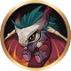
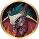

Garra de Lâmina
Garra de Lâmina
 Selvagem
Selvagem
 Sacrifício
Sacrifício
 Leão
Leão
Obsidiana
 Eco
Eco
Este é um site feito por fã em homenagem ao Champions Legion!


 

Garra de Lâmina
Selvagem
Sacrifício
Leão
Obsidiana
Eco
Como jungler, você deve se manter sempre farmando para ficar forte. Raven tem uma ótima mobilidade, aproveite para percorrer bastante pelo mapa procurando oportunidades de gank. Além de possibilitar boas fugas.
O objetivo do Raven nas lutas é entrar, assassinar uma fonte de dano inimiga e sair com a ultimate.
Ordem de compra dos itens: Inicie com a faca de caça( ), compre a lâmina de caçador(
), compre a lâmina de caçador( ), compre a bota de hermes e depois pode buildar os itens na ordem exibida acima. A lâmina de caçador(
), compre a bota de hermes e depois pode buildar os itens na ordem exibida acima. A lâmina de caçador( ) deve ser trocada por algum outro item ao fechar a build. Eu recomendo a capa do profeta mas isso varia de partida para partida.
) deve ser trocada por algum outro item ao fechar a build. Eu recomendo a capa do profeta mas isso varia de partida para partida.
Ordem de upgrade das habilidades: 3ª → 1ª → 2ª.